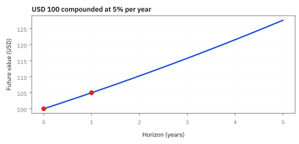
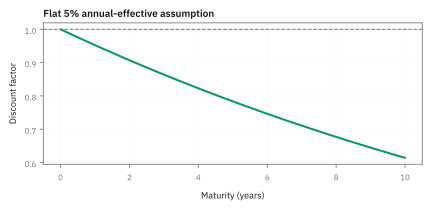
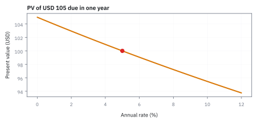
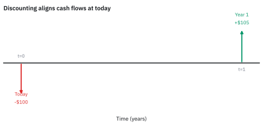

18.1 The Time Value of Money
เงินคนละวันเปรียบเทียบกันไม่ได้ จนกว่าจะย้ายมันมาอยู่วันเดียวกัน
เพื่อนยืมเงิน 100 USD วันนี้และสัญญาคืน 105 USD อีกหนึ่งปี คุณควรยอมไหม ถ้าฝากเงินเองแล้วได้ 5% ต่อปี?
คำตอบคือ: ลองทำเลขเล็ก ๆ: 100 วันนี้โตเป็น 105 พอดี จึงไม่มีของแถมซ่อนอยู่ในคำสัญญา เราเรียกการย้ายเงินอนาคตกลับมาเทียบวันนี้ว่า discounting หรือ time value of money.
จำภาพนี้ไว้: เงินไม่ได้ขึ้นไทม์แมชชีน แต่ discount factor พามันกลับมาที่วันตัดสินใจ.
ศัพท์ที่ใช้ในหัวข้อนี้
- present value (PV)
- มูลค่า ณ วันนี้ของเงินที่จะรับหรือจ่ายในอนาคต หลังแปลงด้วยอัตราผลตอบแทนที่เหมาะกับช่วงเวลา ใช้เปรียบเทียบ cash flow คนละวันบนฐาน USD เดียวกัน
- future value (FV)
- มูลค่าที่เงินวันนี้เติบโตเป็นเมื่อครบ horizon ภายใต้ rate ที่กำหนด ใช้วางแผน funding และตรวจว่าการรอรับเงินคุ้มกับการถือเงินสดหรือไม่
- discount factor
- ตัวคูณที่นำ future cash flow กลับมาเป็น present value ใช้คิดราคา bond และรวม cash flow หลายวันที่มี maturity ต่างกัน
- compounding
- กติกาว่า interest ที่สะสมแล้วสร้าง interest ต่อในงวดถัดไป ใช้ระบุความสัมพันธ์ระหว่าง rate ต่อปีและมูลค่าข้ามเวลา
สัญลักษณ์ที่ใช้ในหัวข้อนี้
| สัญลักษณ์ | ความหมาย | หน่วย |
|---|---|---|
| $PV$ | present value ณ valuation date | USD |
| $FV$ | future value ณ horizon | USD |
| $r$ | annual effective rate ที่สมมติคงที่ | 1/year |
| $T$ | เวลาจากวันนี้ถึง cash flow | years |
| $D(0,T)$ | discount factor จากเวลา $T$ กลับวันนี้ | dimensionless |
ที่มาที่ไป: คำถามที่เก่าแก่พอ ๆ กับการให้ยืมเงิน
ทุกครั้งที่มีคนให้ยืมเงิน คำถามเดียวกันก็เกิดขึ้น คือเงินที่จะได้คืนปีหน้า วันนี้มีค่าเท่าไร
คำถามนี้เก่ามาก และปรากฏในตำราคณิตศาสตร์เชิงพาณิชย์ตั้งแต่ยุคกลาง โดยเฉพาะในงานที่สอนพ่อค้าคำนวณดอกเบี้ยทบต้น
สิ่งที่ทำให้มันยังเป็นบทแรกของการเงินจนถึงทุกวันนี้ คือมันเป็นกฎข้อเดียวที่ทุกอย่างที่เหลือสร้างต่อจากมัน ราคาพันธบัตร ราคาหุ้น ราคา derivative ล้วนเป็นการย้ายเงินอนาคตมาอยู่วันนี้ทั้งสิ้น
จุดที่ต้องระวังคือการเลือกอัตราที่ใช้ย้าย ซึ่งไม่ใช่ข้อเท็จจริงที่วัดมา แต่เป็นการตัดสินใจ และเป็นจุดที่การประเมินมูลค่าถูกบิดได้ง่ายที่สุด
เริ่มจาก trade ที่ต้องเลือกตอนนี้
สมมติว่าเป็น USD risk-free cash flow, ไม่มี default และ rate 5% เป็น annual effective rate คงที่ตลอด 1 ปี เงิน \$100 วันนี้ต้องฝากได้เป็น \$105 ในอีกปีหนึ่งพอดี ดังนั้น quote \$105 จึง fair ภายใต้สมมติฐานนี้ ภาพจำของ desk คือ time travel ทำไม่ได้ แต่ discounting ทำบัญชีให้เหมือนเดินทางกลับได้
ขั้นที่ 1 — ลองด้วยมือ: ฝาก 100 สองปี ดอกเบี้ยของดอกเบี้ยอยู่ตรงไหน
ก่อนสูตร ลองฝากเงิน 100 สองปีด้วยมือ แล้วดูว่าทำไมสองปีไม่ใช่สองเท่าของหนึ่งปี
ปีแรกได้ดอก 5 ปีที่สองได้ดอกจาก 105 ไม่ใช่จาก 100 จึงได้ 5.25 รวมเป็น 110.25 เลข 0.25 คือดอกเบี้ยของดอกเบี้ย นี่คือเหตุผลที่สูตรยกกำลัง $T$ แทนที่จะคูณ $T$
กลับทิศ: ถ้ามีคนสัญญาจะให้ 110.25 ในอีกสองปี วันนี้มันมีค่า 100 พอดี เพราะ 100 ฝากเองก็ได้เท่านั้น ตัวคูณ 0.9070 คือ discount factor สองปี น้อยกว่า 1/1.05 = 0.9524 ของหนึ่งปี ยิ่งไกลยิ่งเล็ก
ระวังคำว่า 5%: ทบรายปีให้ 1.05 ต่อปี ทบต่อเนื่อง (หัวข้อ 1.10) ให้ $e^{0.05}=1.0513$ ต่างกันน้อยแต่ไม่ใช่ศูนย์ ทุกสูตรจากนี้ต้องบอกว่าใช้แบบไหน
ส่วนที่เกิน 110 อีก 0.25 มาจากดอกเบี้ย 5 ของปีแรกที่ได้รับดอกเบี้ยเพิ่มอีก 5% ในปีที่สอง นั่นคือดอกเบี้ยที่เกิดจากดอกเบี้ยเดิม
สองบรรทัดแรกคือดอกเบี้ยห้าเปอร์เซ็นต์สองปีติดกัน
บรรทัดที่สามชี้ส่วนที่เกินจากการคิดแบบตรง ๆ: ถ้าไม่ทบต้นจะได้ 110 พอดี ส่วนเกิน 25 สตางค์คือดอกเบี้ยของดอกเบี้ยปีแรก
สองบรรทัดล่างเดินกลับทิศ คือถอยเงินปลายทางกลับมาวันนี้ ต้องได้ 100 พอดี ซึ่งเป็นการตรวจว่าสองทิศสอดคล้องกัน
ขั้นที่ 2 — โตเงินวันนี้ไปที่ horizon
เงินวันนี้กับเงินปีหน้าเทียบกันตรง ๆ ไม่ได้ ต้องย้ายมาอยู่วันเดียวกันก่อน ห้าบรรทัดนี้สร้างสูตรขึ้นมาจากการคูณซ้ำสามครั้ง แทนที่จะยกมาให้ท่อง และเลขในบรรทัดสุดท้ายคือหลักฐานว่าการทบต้นไม่ใช่การคูณธรรมดา
ลองนับไปทีละปีแทนที่จะจำสูตร ปลายปีแรกได้เงินต้นคืนพร้อมดอกเบี้ย จึงเป็นเงินต้นคูณหนึ่งบวกอัตรา
ปีที่สองคือจุดที่น่าสนใจ ดอกเบี้ยคิดจากยอดใหม่ทั้งก้อน ไม่ใช่จากเงินต้นเดิม ตัวคูณจึงซ้อนกัน นั่นคือความหมายทั้งหมดของคำว่าทบต้น ทำซ้ำอีกครั้งรูปแบบก็ชัด คือคูณตัวเดิมซ้ำทุกปี
เขียนรวบเป็นเลขยกกำลัง จำนวนครั้งที่คูณคือจำนวนปี
ลองด้วยเลขจริง ร้อยบาทที่ห้าเปอร์เซ็นต์สามปี ได้ 115.76 ไม่ใช่ 115 ส่วนต่าง 76 สตางค์นั้นคือดอกเบี้ยของดอกเบี้ย ดูน้อยในสามปี แต่มันโตแบบทวีคูณ
ขั้นที่ 3 — ย้าย future cash flow กลับวันนี้
ทิศกลับกันคือดึงเงินอนาคตกลับมาวันนี้ ซึ่งใช้บ่อยกว่ามากในการตั้งราคา หกบรรทัดนี้ไม่มีอะไรใหม่นอกจากการย้ายข้างและตั้งชื่อ แต่การตั้งชื่อนั้นคือสิ่งที่ทำให้หัวข้อ 18.2 เขียนราคา bond เป็นผลรวมเดียวได้
ขั้นที่ 2 เดินไปข้างหน้า ขั้นนี้แค่เดินย้อนกลับ ย้ายข้างแล้วส่วนด้วยตัวคูณที่สะสมมา ก็ได้เงินวันนี้ที่เทียบเท่ากับเงินอนาคตก้อนนั้น
ตั้งชื่อให้ตัวหารนั้น เพื่อจะได้เขียนเป็นการคูณแทนการหาร ซึ่งสะดวกกว่ามากเมื่อมีเงินหลายงวด และเป็นรูปที่ทั้งบทที่ 18 กับบทที่ 20 ใช้ตลอด
อ่านขนาดของมัน เมื่ออัตราเป็นบวก ตัวคูณสะสมมากกว่าหนึ่ง ตัวหารจึงน้อยกว่าหนึ่ง เงินอนาคตจึงมีค่าน้อยกว่าเงินวันนี้เสมอ
ลองด้วยเลขเดียวกับขั้นที่ 2 ได้ 0.8638 แปลว่าเงินหนึ่งบาทในสามปี มีค่าวันนี้ราว 86 สตางค์ และเลขนี้คือหนึ่งส่วนด้วย 1.157625 ซึ่งเป็นตัวเลขเดียวกับที่ขั้นก่อนคำนวณไว้
ขั้นที่ 4 — ตรวจ quote \$105
ลองกับตัวเลขจริงหนึ่งตัว เพื่อดูว่าราคาที่เสนอมานั้นคุ้มหรือไม่
แทน $FV=105$ USD, $r=0.05$ ต่อปี และ $T=1$ year ได้ present value เท่ากับ $100.00$ USD จึงไม่มีส่วนเกินจากเงินสด \$100 วันนี้ภายใต้ rate ที่สมมติ
ขั้นที่ 5 — สองก้อนของ worked example คิดทีละก้อน
worked example ท้ายหัวข้อบอกคำตอบ 98.14 ตรงนี้กางให้เห็นทุกตัวคูณ
ก้อนแรกใช้ discount factor หนึ่งปี 0.9524 ก้อนที่สองใช้ของสองปี 0.9070 คนละตัวเพราะรออยู่คนละนาน แล้วค่อยบวก ตอนบวกทั้งคู่เป็นเงินวันนี้แล้ว
ตรวจ: เงินอนาคตรวม 108 กลายเป็น 98.14 วันนี้ ลดลงราว 9% สมเหตุสมผลกับดอกเบี้ย 5% เป็นเวลาราวสองปี สัญญานี้คือพันธบัตรสองปีที่จ่ายดอก 4 ต่อปี และหัวข้อ 18.2 จะใช้ตัวเลขชุดเดียวกันนี้วัดว่าราคามันไวต่อดอกเบี้ยแค่ไหน
ขั้นที่ 6 — ทบต้นต่อเนื่อง: limit ของการซอยงวดและ differential equation
การทบต้นแบบต่อเนื่องเป็นหัวใจของการคำนวณในตลาดการเงิน เพราะ exponential function อย่าง $e^{rT}$ มีคุณสมบัติทางคณิตศาสตร์ที่เรียบง่าย สะสมช่วงเวลาย่อยได้โดยการบวกเลขชี้กำลัง
สมมติว่าในหนึ่งปีแบ่งจ่ายดอกเบี้ย $m$ ครั้ง ดอกเบี้ยต่องวดคือ $r/m$ และจำนวนงวดทั้งหมดคือ $m T$ หากแบ่งซอยงวดให้ถี่ขึ้นเรื่อย ๆ จน $m \to \infty$ ก้อนฐานจะเข้าหาค่าคงที่ $e$ พอดี ทำให้เงินปลายทางกลายเป็น $PV e^{r T}$
อีกมุมหนึ่งคือมองผ่านอัตราการเติบโต ณ ทุกขณะ เวลาเงินวิ่งไปข้างหน้า อัตราการเพิ่มของเงินย่อมแปรผันตรงกับเงินที่มีอยู่ขณะนั้น เขียนเป็น differential equation ได้ว่า $dM/dt = r M$
ย้ายข้างแล้วทำ integral ทั้งสองฝั่ง จะได้ผลเฉลย exponential แบบเดียวกันทันที ตัว discount factor แบบต่อเนื่องจึงเป็น $e^{-r T}$
ลองแทนเลขจริง ดอกเบี้ย 5% ต่อปีเป็นเวลา 3 ปี ถ้าทบต้นรายปีได้ 115.76 แต่ถ้าทบต่อเนื่องจะได้ 116.18 ผลต่าง 42 เซนต์เกิดจากการนำดอกเบี้ยไปสร้างผลตอบแทนแทบจะในทุกเสี้ยววินาที
ขั้นที่ 7 — ผลรวมเรขาคณิตของกระแสเงินสด Annuity และ Perpetuity
สูตร annuity ช่วยประเมินมูลค่ากระแสเงินสดคงที่หลายงวด เช่น พันธบัตรจ่าย coupon สม่ำเสมอ หรือการผ่อนชำระสินเชื่อ โดยไม่ต้องคำนวณ discount factor ทีละงวดแยกกัน
เมื่อกระแสเงินสดจ่ายเท่ากันทุกงวด $c$ เราสามารถดึงตัวร่วมออกมา แล้วมองก้อนที่เหลือเป็นอนุกรมเรขาคณิตที่มีอัตราส่วนร่วมคือ $v = 1/(1+r)$
กลยุทธ์ตัดพจน์ของอนุกรมเรขาคณิตคือคูณ $S_n$ ด้วย $v$ แล้วนำสองสมการมาลบกัน พจน์ตรงกลางตั้งแต่กำลังสองถึงกำลัง $n$ จะตัดกันหมดเกลี้ยง เหลือเพียงหัวกับท้าย
สังเกตตัวหาร $1-v$ แปลงร่างเป็น $rv$ ซึ่งตัดกับ $v$ ด้านบนอย่างลงตัว จึงได้สูตรมูลค่าปัจจุบันของ annuity ที่ไม่ต้องนั่งบวกทีละงวด
หากกระแสเงินสดจ่ายต่อไปไม่มีวันสิ้นสุดหรือ perpetuity พจน์ยกกำลังลบจะ converge สู่ศูนย์ ทำให้สูตรยุบเหลือเพียง $c/r$ สั้น ๆ อย่างน่าอัศจรรย์
ที่มาที่ไป: จากเงินกู้ชาวบาบิโลนสู่ค่าคงที่ e ของ Bernoulli
แนวคิดเรื่องดอกเบี้ยและการทบต้นมีบันทึกย้อนไปกว่า 4,000 ปีในแผ่นดินเหนียวของอารยธรรมบาบิโลน แต่การศึกษาคณิตศาสตร์ของการทบต้นอย่างจริงจังเกิดขึ้นในยุโรปยุคศตวรรษที่ 17
ในปี ค.ศ. 1683 Jacob Bernoulli พยายามตอบคำถามทางการเงินว่า หากเงินต้น 1 ปอนด์ได้รับดอกเบี้ย 100% ต่อปี แต่ผู้กู้จ่ายดอกเบี้ยซอยย่อยถี่ขึ้นเรื่อย ๆ เงินปลายทางจะโตจนกลายเป็นอนันต์ได้หรือไม่ การคำนวณ limit ดังกล่าวทำให้เขาค้นพบค่าคงที่ธรรมชาติ $e \approx 2.71828$ เป็นครั้งแรก
ต่อมาในศตวรรษที่ 18 รัฐบาลอังกฤษได้ออกพันธบัตรแบบไม่ระบุวันหมดอายุหรือ British Consol ซึ่งจ่ายเงินงวดเท่ากันสม่ำเสมอไปตลอดกาล สูตร perpetuity อย่าง $c/r$ จึงกลายมาเป็นเครื่องมือหลักที่นักการเงินบนโต๊ะเทรดใช้ตีมูลค่าหนี้สินและเป็นรากฐานของตราสารหนี้ทั่วโลกจนถึงปัจจุบัน
แล้วเอาไปใช้ทำอะไรได้จริงบ้าง
การย้ายเงินข้ามเวลาให้มาอยู่วันเดียวกัน เป็นการคำนวณที่อยู่เบื้องหลังทุกราคาในตลาด
ใช้ตัดสินว่าข้อเสนอที่จ่ายเงินในอนาคตคุ้มหรือไม่ ซึ่งเป็นคำถามของทุกการลงทุน
ใช้ตั้งราคาตราสารหนี้และเงินกู้ทุกชนิด
ใช้เปรียบเทียบข้อเสนอที่จ่ายคนละเวลา ซึ่งเทียบกันตรง ๆ ไม่ได้เลยถ้าไม่ย้ายมาวันเดียวกันก่อน
Figure 18.1a — เงินก้อนเดียวกันบนสองวัน

เส้นนี้วาด future value ของ \$100 เมื่อ rate 5% ต่อปีแบบ annual compounding; เป็นตัวอย่างสมมติ ไม่ใช่ forecast ของ Treasury yield
Figure 18.1b — discount factor ลดตามเวลา

เมื่อ rate คงที่ 5% discount factor ลดจาก 1 วันนี้ไปใกล้ศูนย์เมื่อ horizon ยาวขึ้น; รูปนี้แยก rate assumption ออกจากความจริงที่ curve อาจไม่แบน
Figure 18.1c — rate สูงทำให้ present value ต่ำ

สำหรับ cash flow \$105 ใน 1 ปี present value ลดตาม funding rate; ความชันนี้คือเหตุผลที่ต้องเลือก curve ให้สอดคล้องกับ cash flow และ collateral
Figure 18.1d — ย้าย cash flow มา valuation date เดียวกัน

แผนภาพนี้แยกเงินสด \$100 วันนี้ออกจาก \$105 ในอีก 1 ปี แล้วแสดงว่าการ discount ทำให้ทั้งสองจำนวนเทียบกันได้ที่ \$100 ณ วันนี้ภายใต้ rate 5%; ลูกศรเป็น accounting identity ไม่ใช่การเคลื่อนเงินสดจริง
Worked Example — เงินสองก้อนนี้มีค่าเท่าไรวันนี้
ถาม: สัญญาจ่าย 4 USD ในอีก 1 ปีและ 104 USD ในอีก 2 ปี ถ้า annual effective rate เท่ากับ 5% ราคาวันนี้เท่าไร?
ของที่มี: cash flow แรก 4 USD ใช้เวลา 1 ปี, ก้อนที่สอง 104 USD ใช้เวลา 2 ปี และ rate 0.05 ต่อปี แต่ละก้อนต้องใช้ discount factor ตามเวลาของตัวเอง
คิดทีละงาน: discount ก้อนแรกเป็น 4/1.05 แล้ว discount ก้อนที่สองเป็น 104/1.05² จากนั้นจึงบวก เพราะตอนนี้เงินทั้งคู่ถูกย้ายมาอยู่วันนี้แล้ว คำตอบคือ 98.14 USD เมื่อปัดสองตำแหน่ง
เช็กใน 10 วินาที: เงินอนาคตรวม 108 USD ต้องมี present value ต่ำกว่า 108 เมื่อ rate เป็นบวก ถ้าได้มากกว่า แปลว่าเผลอทบต้นไปข้างหน้า
เอาไปใช้จริง: เวลาให้ราคา bond จริง ให้ใช้ discount factor ของแต่ละ maturity จาก curve อย่าบังคับใช้ 5% ก้อนเดียวถ้า curve ไม่แบน
กับดัก: เอา return คนละ horizon มาเทียบตรง ๆ
5% ต่อปีไม่ใช่ 5% ต่อ 6 เดือน และ annual effective rate ไม่ใช่ continuously compounded rate โดยอัตโนมัติ ระบุ day count, compounding convention และ curve date ทุกครั้ง มิฉะนั้นความต่างเล็กใน rate อาจเป็น USD จริงในขนาดสัญญาใหญ่
ข้อจำกัด: วิธีนี้สมมติอะไร และของจริงเป็นอย่างไร
| เรื่อง | วิธีนี้สมมติว่า | ของจริงเป็นอย่างไร | ผลที่ตามมาเวลาใช้งาน |
|---|---|---|---|
| อัตราที่ใช้ | รู้อัตราคิดลดที่ถูกต้อง | การเลือกอัตราคือการตัดสินใจ ไม่ใช่ข้อเท็จจริง | มูลค่าที่คำนวณได้เปลี่ยนไปมากเมื่อเปลี่ยนอัตราเล็กน้อย โดยเฉพาะกระแสเงินระยะยาว |
| ความแน่นอน | เงินในอนาคตจะได้แน่นอน | มีความเสี่ยงว่าจะไม่ได้ | ต้องบวกส่วนชดเชยความเสี่ยงเข้าไปในอัตรา ซึ่งประมาณยาก |
| อัตราเดียว | ใช้อัตราเดียวทุกงวด | อัตราต่างกันตามอายุ | ต้องใช้เส้นอัตราดอกเบี้ยทั้งเส้น ซึ่งเป็นเนื้อหาของหัวข้อ 20.1 |
แถวแรกเป็นจุดที่การประเมินมูลค่าถูกบิดได้ง่ายที่สุด เพราะอัตราที่เลือกกำหนดคำตอบเกือบทั้งหมด
สรุปที่ใช้ได้จริง
- present value ทำให้ cash flow คนละวันเปรียบเทียบกันได้บน valuation date เดียว
- $D(0,T)$ ต้องระบุ rate convention และ maturity เสมอ
- ตัวอย่าง \$105 ใน 1 ปีมีค่า \$100 วันนี้เมื่อ annual effective rate เท่ากับ 5%